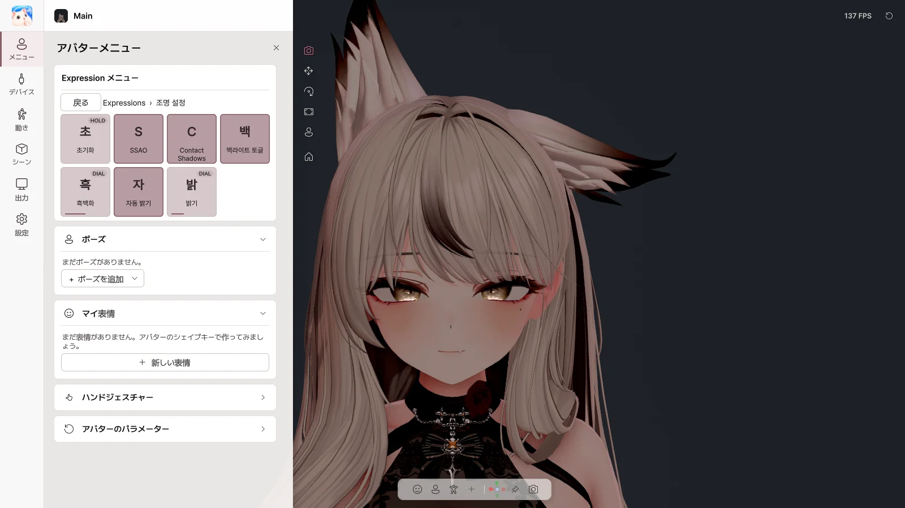
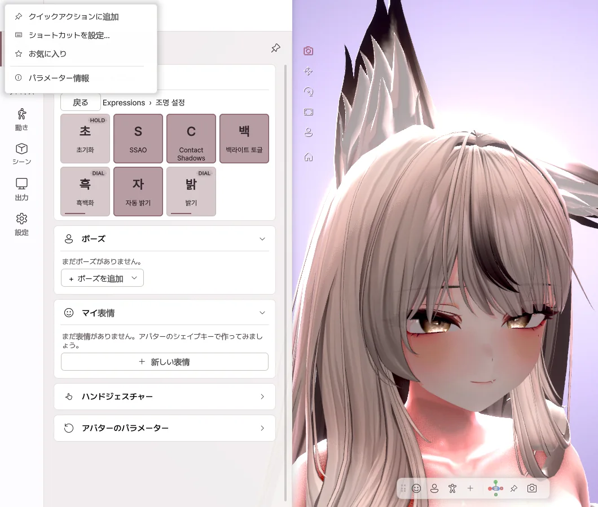
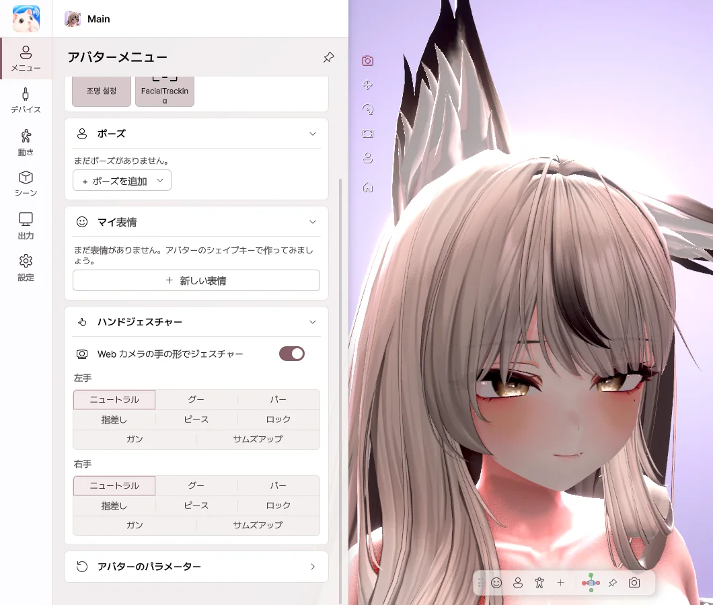

5. アバターメニュー
VRChat で使っていたアバターの Expression メニュー を、そのまま使えます。衣装やヘアのトグル、表情ボタン、Radial、Puppet が VRChat と同じように動作します。
Expression メニュー

- Toggle — 押すたびにオン / オフが切り替わります。
- Button — 押している間だけオンになります。
- Sub Menu — サブメニューを開きます。戻る で戻ります。
- Radial・Puppet — スライダーやパッドで値を決めます。
項目を右クリック

- クイックアクションに追加 — 下のツールバーに、ボタンとして置きます。
- ショートカットを設定… — ゲーム中でも、キーひとつでオンにできます。
- お気に入り — メニューの一番上から、すぐに使えます。
ハンドジェスチャー

- 左手・右手のジェスチャーを選んで、アバターのジェスチャー表情を出します。
- Web カメラの手の形でジェスチャー をオンにすると、自分の手の形がそのままジェスチャーになります。
デフォルトに戻す
アバターのパラメーター › デフォルトに戻す を押すと、メニューの値がアバターの初期値に戻ります。衣装の状態のように保存される値は、次回の起動時にも引き継がれます。
クイックアクション
よく使う操作を、ボタンやキーにしておけます。メニュー項目、ジェスチャー、カメラビュー、ライティングプリセットなどを登録でき、ボタンを右クリックすると名前や位置を変更できます。
リセット
| リセット | すべてリセット | |
|---|---|---|
| 内容 | トラッキング、手のポーズ、PhysBone を最初の状態に | 上記に加えて、衣装・位置・カメラまで最初の状態に |
| 実行 | 上部の ⟲ | ⟲ を右クリック、または 設定 › 一般 |